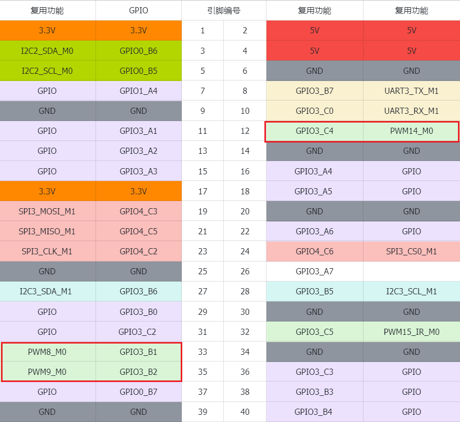

<!DOCTYPE lake>
<p data-lake-id="u5d4570f0" id="u5d4570f0"><span class="lake-fontsize-12" data-lake-id="ucaad0ca4" id="ucaad0ca4" style="color: rgb(51, 51, 51)">泰山派默认提供了3组PWM的GPIO ， 为了检测PWM的输出，我们可以配合逻辑分析仪来查看效果，或者搭配STC8的LED灯</span></p><p data-lake-id="u3d6df861" id="u3d6df861"><span class="lake-fontsize-12" data-lake-id="ueae17827" id="ueae17827" style="color: rgb(51, 51, 51)">​</span><br/></p><p data-lake-id="u259201f3" id="u259201f3" style="text-align: left"></p><h1 data-lake-id="co8xG" id="co8xG"><span data-lake-id="u13f9a2df" id="u13f9a2df" style="color: rgb(51, 51, 51)">PWM 测试</span></h1><ul list="ufb293de3"><li data-lake-id="u67a56c39" fid="u99c2e82a" id="u67a56c39"><span class="lake-fontsize-12" data-lake-id="u4acc6ac7" id="u4acc6ac7" style="color: rgb(51, 51, 51)">列举所有的PWM设备：</span></li></ul><span class="yuque-card-unsupported">[codeblock]</span><ul list="u2efc81aa"><li data-lake-id="ud0a1e015" fid="u7a0cc978" id="ud0a1e015"><span class="lake-fontsize-12" data-lake-id="u567cddaa" id="u567cddaa" style="color: rgb(51, 51, 51)">这里就以pwm8进行测试：</span></li></ul><span class="yuque-card-unsupported">[codeblock]</span><ul list="u24d351ad"><li data-lake-id="u49911a81" fid="uecf9243a" id="u49911a81"><span class="lake-fontsize-12" data-lake-id="ub058a94a" id="ub058a94a" style="color: rgb(51, 51, 51)">使能调试通道</span></li></ul><span class="yuque-card-unsupported">[codeblock]</span><ul list="u3eb5d390"><li data-lake-id="u9d8bf5f8" fid="u0a17418b" id="u9d8bf5f8"><span class="lake-fontsize-12" data-lake-id="u7b836ef0" id="u7b836ef0" style="color: rgb(51, 51, 51)">设置pwm周期、频率、极性</span></li></ul><span class="yuque-card-unsupported">[codeblock]</span><ul list="u9a348032"><li data-lake-id="u8b5bf7da" fid="u1e7d890a" id="u8b5bf7da"><span class="lake-fontsize-12" data-lake-id="u0b383c28" id="u0b383c28" style="color: rgb(51, 51, 51)">启动与停止PWM</span></li></ul><span class="yuque-card-unsupported">[codeblock]</span><ul list="u16fc782a"><li data-lake-id="u5590d09c" fid="u6816931b" id="u5590d09c"><span class="lake-fontsize-12" data-lake-id="uef069886" id="uef069886">最后，关闭通道</span></li></ul><span class="yuque-card-unsupported">[codeblock]</span>